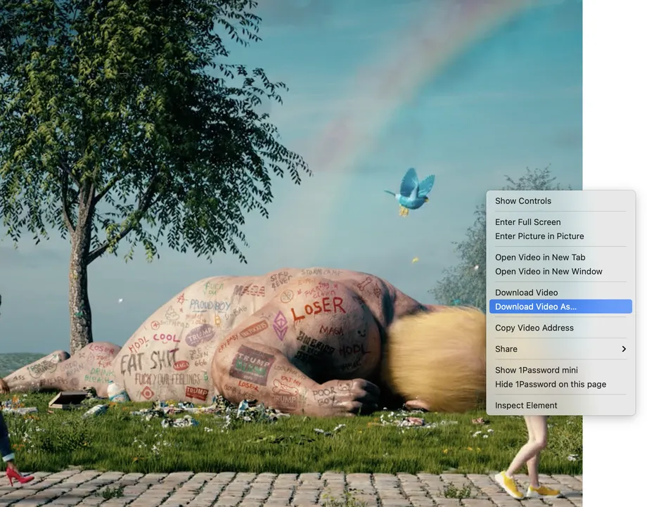

Right, sorry. “Non-fungible” more or less means that it’s unique and can’t
be replaced with something else. For example, a bitcoin is fungible —
trade one for another bitcoin, and you’ll have exactly the same thing. A
one-of-a-kind trading card, however, is non-fungible. If you traded it for
a different card, you’d have something completely different. You gave up a
Squirtle, and got a 1909 T206 Honus Wagner, which StadiumTalk calls “the
Mona Lisa of baseball cards.” (I’ll take their word for it.)
How do NFTs work?
At a very high level, most NFTs are part of the Ethereum blockchain.
Ethereum is a cryptocurrency, like bitcoin or dogecoin, but its blockchain
also supports these NFTs, which store extra information that makes them
work differently from, say, an ETH coin. It is worth noting that other
blockchains can implement their own versions of NFTs. (Some already have.)
What’s worth picking up at the NFT supermarket?
NFTs can really be anything digital (such as drawings, music, your brain
downloaded and turned into an AI), but a lot of the current excitement is
around using the tech to sell digital art.
You mean, like, people buying my good tweets?
I don’t think anyone can stop you, but that’s not really what I meant. A
lot of the conversation is about NFTs as an evolution of fine art
collecting, only with digital art. (Side note, when coming up with the
line “buying my good tweets,” we were trying to think of something so
silly that it wouldn’t be a real thing. So of course the founder of
Twitter sold one for just under $3 million shortly after we posted the
article.)
Do people really think this will become like art collecting?
I’m sure some people really hope so — like whoever paid almost $390,000
for a 50-second video by Grimes or the person who paid $6.6 million for a
video by Beeple. Actually, one of Beeple’s pieces was auctioned at
Christie’s, the famou—

Sorry, I was busy right-clicking on that Beeple video and downloading the
same file the person paid millions of dollars for.
Wow, rude. But yeah, that’s where it gets a bit awkward. You can copy a
digital file as many times as you want, including the art that’s included
with an NFT. But NFTs are designed to give you something that can’t be
copied: ownership of the work (though the artist can still retain the
copyright and reproduction rights, just like with physical artwork). To
put it in terms of physical art collecting: anyone can buy a Monet print.
But only one person can own the original.
What’s the point of NFTs?
That really depends on whether you’re an artist or a buyer.
I’m an artist.
First off: I’m proud of you. Way to go. You might be interested in NFTs
because it gives you a way to sell work that there otherwise might not be
much of a market for. If you come up with a really cool digital sticker
idea, what are you going to do? Sell it on the iMessage App Store? No way.
Also, NFTs have a feature that you can enable that will pay you a
percentage every time the NFT is sold or changes hands, making sure that
if your work gets super popular and balloons in value, you’ll see some of
that benefit.
I’m a buyer.
One of the obvious benefits of buying art is it lets you financially
support artists you like, and that’s true with NFTs (which are way
trendier than, like, Telegram stickers). Buying an NFT also usually gets
you some basic usage rights, like being able to post the image online or
set it as your profile picture. Plus, of course, there are bragging rights
that you own the art, with a blockchain entry to back it up.
No, I meant I’m a collector.
Ah, okay, yes. NFTs can work like any other speculative asset, where you
buy it and hope that the value of it goes up one day, so you can sell it
for a profit. I feel kind of dirty for talking about that, though.
So every NFT is unique?
In the boring, technical sense that every NFT is a unique token on the
blockchain. But while it could be like a van Gogh, where there’s only one
definitive actual version, it could also be like a trading card, where
there’s 50 or hundreds of numbered copies of the same artwork.
Who would pay hundreds of thousands of dollars for what basically amounts
to a trading card?
Well, that’s part of what makes NFTs so messy. Some people treat them like
they’re the future of fine art collecting (read: as a playground for the
mega-rich), and some people treat them like Pokémon cards (where they’re
accessible to normal people but also a playground for the mega-rich).
Speaking of Pokémon cards, Logan Paul just sold some NFTs relating to a
million-dollar box of the—
I’ve heard there were kittens involved. Tell me about the kittens.
NFTs really became technically possible when the Ethereum blockchain added
support for them as part of a new standard. Of course, one of the first
uses was a game called CryptoKitties that allowed users to trade and sell
virtual kittens. Thank you, internet.
Same. But in my opinion, the kittens show that one of the most interesting
aspects of NFTs (for those of us not looking to create a digital dragon’s
lair of art) is how they can be used in games. There are already games
that let you have NFTs as items. One even sells virtual plots of land as
NFTs. There could be opportunities for players to buy a unique in-game gun
or helmet or whatever as an NFT, which would be a flex that most people
could actually appreciate.
At least it’s not digital pet rocks... right?
In fact, there are people who are spending tens or hundreds of thousands
of dollars on NFT pet rocks (the website for which says that the rocks
serve no purpose other than being tradable and limited).